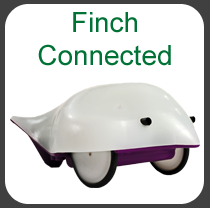

To get the finch connected to snap, first plug it in using its USB cable. Then, find and start the "BirdBrain Robot Server" program (probably in Applications on Mac, or under the Start Menu on Windows). It should display a "Finch Connected" message. Now, when you open the starter file below, it will be able to communicate with the finch. Talk to your TA if you encounter trouble when setting up the finch.
The finch has its own set of blocks that allow you, the programmer, to tell it what to do. Take a look in the "Finch Blocks" sprite of this starter file. All of the finch blocks are laid out in groups on the main scripts area. They are also available under the usual block palettes (Sensing, Motion, etc.) - remember that the color of each block tells you where to find it. Test out all of the finch blocks and make sure you understand what each one does. As you explore, make sure to pay attention to the domains of these blocks:
Move Finch block takes in values between -100 and 100.Finch LED block takes in values between 0 and 100.Say This block takes in anything that can be said (letters, numbers, etc.).Finch Buzzer and Finch Buzz+Wait blocks take in positive numbers.If you would like a more structured step-by-step introduction to the finch blocks, check out this video.